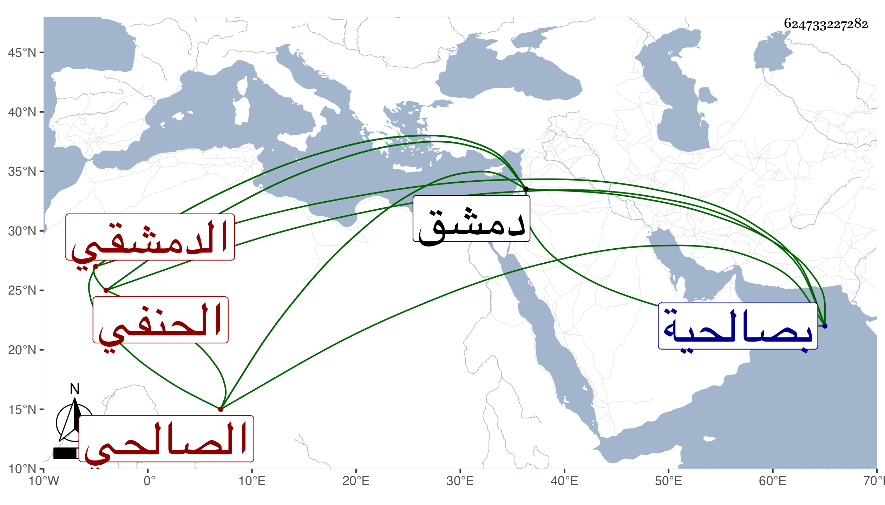

0902Sakhawi.DawLamic.ITO20230111-ara1.EIS1600.624733227282
Biography ID: 624733227282
872
عبد الكريم بن محمد بن محمد بن عبادة بن عبد الغني النجم بن الشمس الدمشقي الصالحي الحنفي أخو أحمد الماضي ، ويعرف بابن عبادة ولد في سنة أربع وتسعين وسبعمائة بدمشق وقرأ بها القرآن عند العلاء بن الشحام وحفظ المختار وعقيدة الطحاوي والاخسيكتي وعرضها على الشمس بن الديري بل حضر دروسه في الفقه وغيرها وسمع على عائشة ابنة ابن عبد الهادي وحدث باليسير سمع منه الفضلاء وحج ولقيته بصالحية دمشق فقرأت عليه ثلاثيات البخاري ، وكان شيخا حسنا متواضعا رئيسا ناب في القضاء . ومات في جمادى الآخرة سنة ستين ودفن بتربتهم بسفح قاسيون شرقي الروضة رحمه الله وإيانا .
